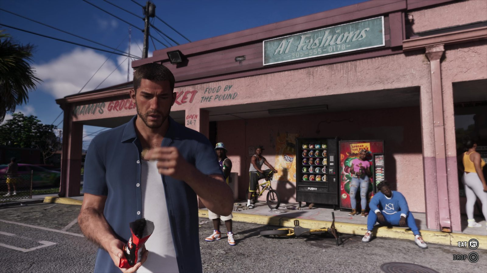
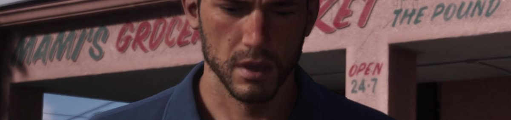
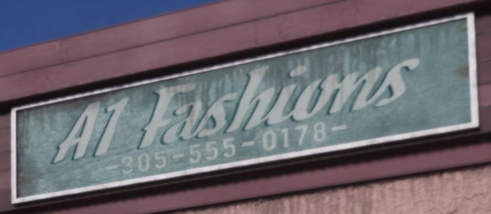
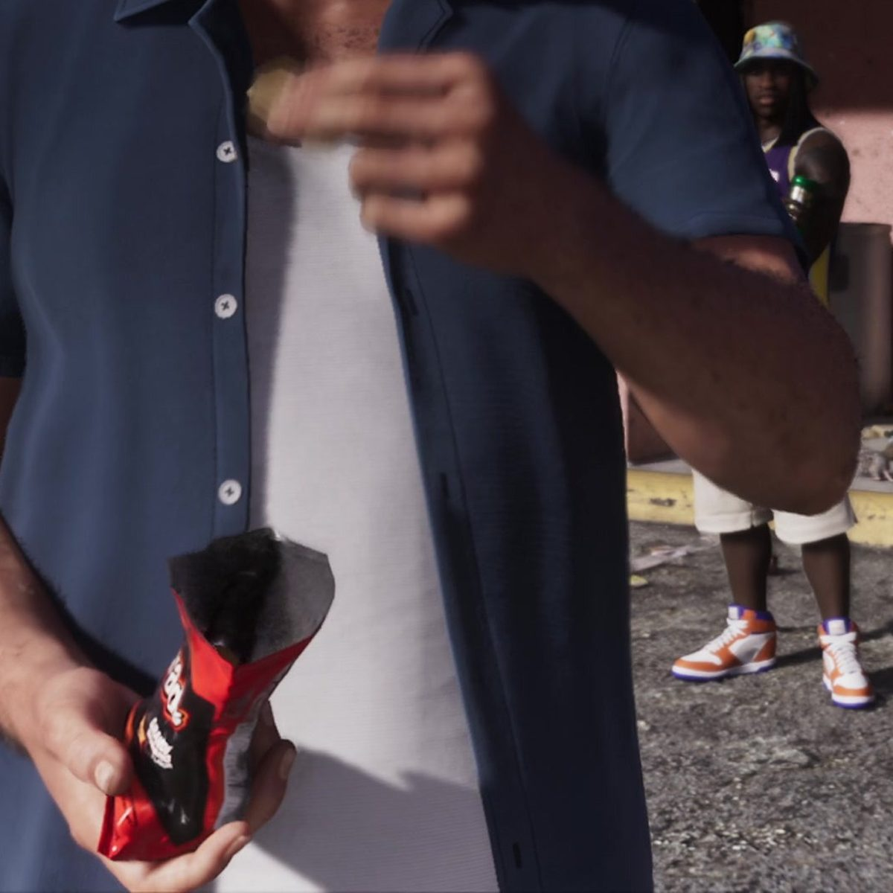
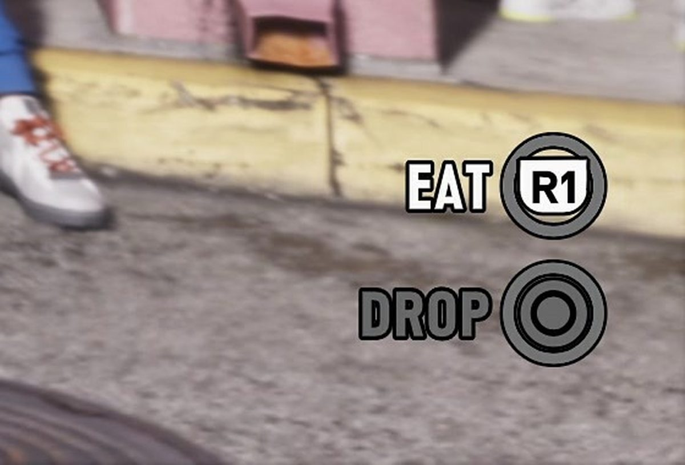
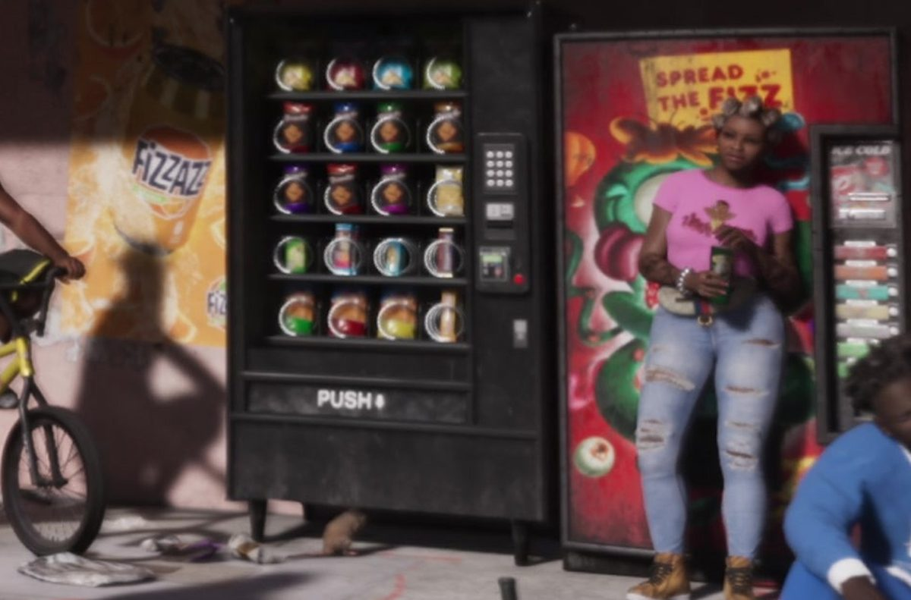
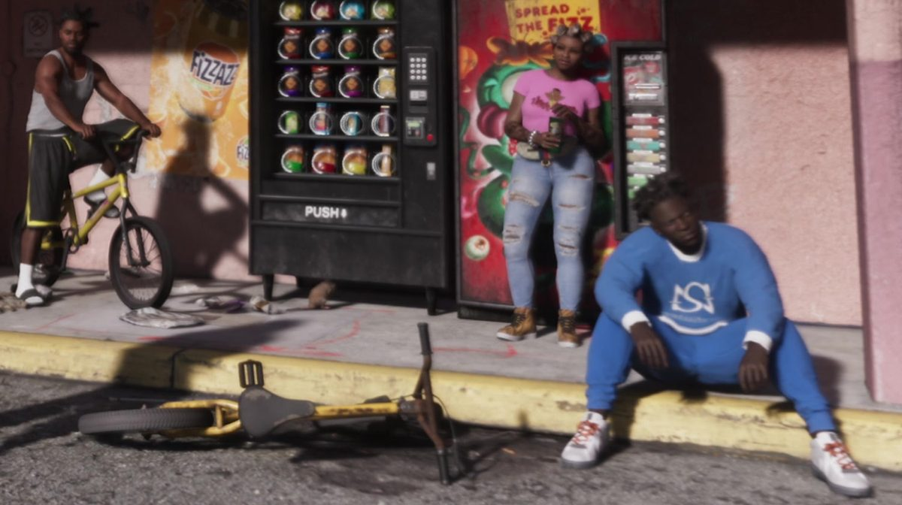

Разбор кадра: Джейсон ест чипсы у Mami’s Grocery
Обновлено:

- Кадр из официального «Расширенного показа», отметка 09:04.
- Еда — предмет в руке: подсказки EAT и DROP.
- На вывеске телефон с реальным кодом Майами 305 и «киношным» 555.
- Всё, что не читается однозначно, помечено.
Сцена
Полдень, асфальт горячий. Ты выходишь из магазинчика на углу с пакетом чипсов и ешь прямо на парковке. У автоматов болтают местные, кто-то бросил велосипед посреди дороги, парень в панаме смотрит на тебя слишком долго. Одна кнопка — съесть, другая — выбросить пакет и заняться делом.
Кадр длится две секунды, между уличными сценами у мотеля. Сюжета тут нет, зато видно, как Rockstar строит мир: вывески, реклама, прохожие и подсказка на экране, которая раскрывает новую механику.
Кадр целиком
Нажмите на номер, чтобы перейти к фрагменту.
6 деталей

1 Mami’s Grocery Market
Розовый магазинчик с вывеской, нарисованной от руки: «Mami’s Grocery Market» (середину закрывает голова Джейсона), справа «Food by the pound» — «еда на вес» и «Open 24-7». Над крышей — столб с трансформатором, провода и радиомачта. Это не открыточный Вайс-Сити с неоном, а район, где живут обычные люди.

2 A1 Fashions и телефон 305
Соседняя вывеска — A1 Fashions и номер 305-555-0178. В этом номере сразу две реальные детали, о них — в блоке «Неочевидный факт» ниже.

3 Пакет чипсов
Джейсон на ходу ест из красного пакета: одной рукой держит пакет, другой подносит еду ко рту. Название на пакете не читается. За спиной — парень в панаме с зелёной бутылкой, который смотрит прямо на героя.

4 Подсказка: EAT / DROP
В углу экрана две подсказки: EAT (R1) — съесть и DROP (○) — выбросить. Значит, еда — это предмет в руке: её можно есть по ходу дела или бросить, когда нужно. Как еда влияет на героя — в статье Новые механики GTA 6: что изменилось.

5 Автоматы и «Spread the Fizz»
Чёрный снековый автомат с надписью PUSH, рядом красный автомат с напитками и слоганом «Spread the Fizz», на стене — оранжевый плакат газировки FIZZAZZ (читаем по видимым буквам). У автоматов стоит девушка в розовой футболке с банкой в руке.

6 Жизнь на бордюре
На жёлтом бордюре сидит парень в синем спортивном костюме, рядом на асфальте лежит BMX. Слева второй парень сидит на таком же велосипеде, справа проходит женщина в жёлтом топе. Никто из них не участвует в сцене. Они просто живут здесь, пока Джейсон жуёт чипсы.
305 — настоящий телефонный код Майами и округа Майами-Дейд, один из первых кодов США, он существует с 1947 года. Для местных «305» давно стало прозвищем самого города. А 555-0100…555-0199 — диапазон, который североамериканская система нумерации оставила для фильмов и книг: такие номера никому не выдают, поэтому в кино звонят именно по ним. Rockstar соединила оба правила: номер звучит как настоящий майамский, но дозвониться по нему нельзя.
Что мы узнали
- Еда — предмет в руке с отдельными действиями: съесть или выбросить.
- Вывески пишут с реальными деталями Майами: код 305 на месте.
- Районы Вайс-Сити живые: прохожие занимаются своими делами без участия героя.
- Реклама газировки в мире игры есть на стенах и автоматах (FIZZAZZ, «Spread the Fizz»).
Где этот кадр в видео — «Расширенный показ» GTA 6: что показали за 26 минут — с таймкодами. Прошлый разбор — Разбор кадра: что лежит в холодильнике в Вайс-Сити.
Источники: Rockstar Games — «Grand Theft Auto VI: An Extended Look», 09:04 (кадр 3840×2160); NANPA (номера 555-01XX для художественных произведений).